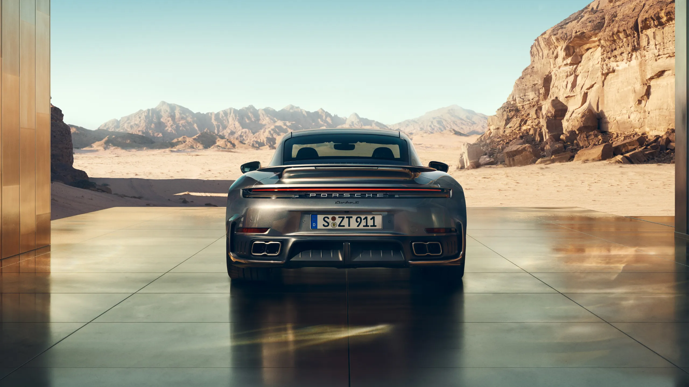
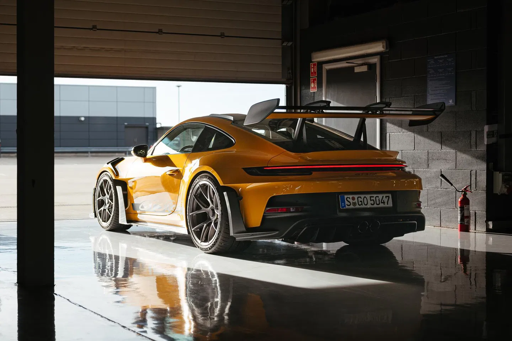
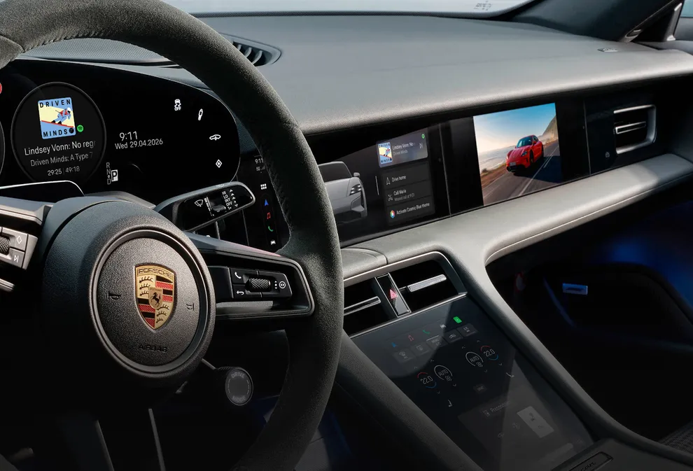

01 / Design
Uma identidade que prende o olhar.
Proporções, curvas e detalhes que convidam a observar mais de perto. Descubra a presença do 911 Turbo S.
Explorar o 911 Turbo SDesign e inspiração
Um convite para imaginar o próximo capítulo.

Um olhar adiante
Algumas formas prendem o olhar. As proporções, as superfícies e os detalhes da Mission S convidam você a descobrir uma nova perspectiva do design.
Explore cada ângulo. Observe como a luz revela os contornos e como o conjunto transmite movimento. Um convite para imaginar o que vem a seguir.
Explorar a coleção →Universo Porsche
No desenho de uma silhueta, na atenção a cada curva ou na experiência dentro da cabine: descubra o que faz cada modelo despertar uma conexão.

01 / Design
Proporções, curvas e detalhes que convidam a observar mais de perto. Descubra a presença do 911 Turbo S.
Explorar o 911 Turbo S
02 / Performance
Um olhar para o lado mais intenso da experiência esportiva. Conheça os detalhes e a proposta do 911 GT3 RS.
Conhecer o GT3 RS
03 / Experiência elétrica
A experiência também começa na cabine. Observe o interior do Taycan e descubra outra forma de viver a esportividade.
Descobrir o TaycanSinta a experiência
Design que chama atenção. Performance que desperta os sentidos.
Novos ângulos. A mesma paixão por dirigir.
O som do 911 Turbo S em uma sequência de acelerações. Uma personalidade que também se reconhece de olhos fechados.
Ajuste o volume e pressione reproduzir.